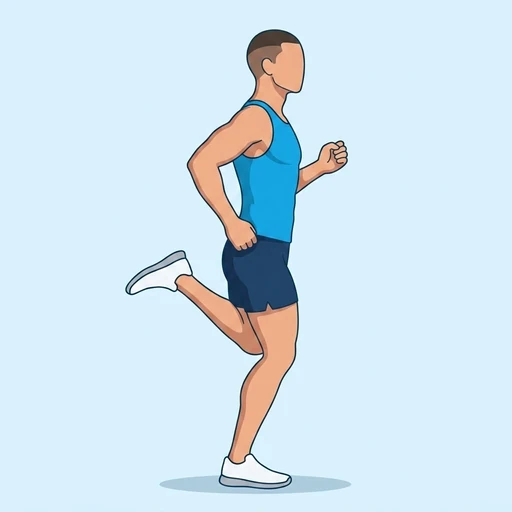

Heel Flicks
A running warm-up drill that alternates the heels towards the glutes, raising the cadence while dynamically flexing the knees and preparing the hamstrings.
Full body · Bodyweight · Beginner

Muscles worked by the Heel Flicks
Primary
Secondary
Also called: hamstring, hamstrings, posterior thigh, biceps femoris.
Equipment
No equipment — this is a bodyweight exercise.
How to do the Heel Flicks
- Stand tall with the feet under the hips and the arms bent as for running.
- Begin jogging lightly in place.
- Flick one heel up towards the same-side glute without driving the knee forward.
- Switch feet quickly and continue alternating at an even rhythm.
- Stay light on the forefeet and keep the torso upright for the full interval.
Form tips
- Aim for quick relaxed contacts rather than forcing the heel into the glute.
- Keep the knees pointing down instead of lifting them like high knees.
- Start slowly and increase cadence only after the rhythm feels smooth.
At a glance
| Body part | Full body |
|---|---|
| Category | Cardio |
| Force type | Dynamic |
| Mechanic | Compound |
| Difficulty | Beginner |
| Equipment | Bodyweight |
| Goals | Endurance |
| Tags | Cardio, Conditioning, Full body, Warm up, Bodyweight |
| MET | 8.0 (metabolic equivalent, for calorie estimates) |
| Unilateral | No |
| Bodyweight | Yes |
| Dataset id | heel-flicks |
Heel Flicks in German & Spanish
| German | Anfersen |
|---|---|
| Spanish | Talones a los Glúteos |
Descriptions, instructions and tips ship in all three languages in the JSON.
Related exercises
Exercise data (JSON)
The record below is exactly what exercises.json ships for this exercise — names, descriptions, instructions and tips in English, German and Spanish.
{
"id": "heel-flicks",
"name_en": "Heel Flicks",
"name_de": "Anfersen",
"name_es": "Talones a los Glúteos",
"description_en": "A running warm-up drill that alternates the heels towards the glutes, raising the cadence while dynamically flexing the knees and preparing the hamstrings.",
"description_de": "Eine Lauf-Aufwärmübung, bei der die Fersen abwechselnd Richtung Gesäß schnellen, um die Schrittfrequenz zu erhöhen, die Knie dynamisch zu beugen und die Beinrückseite vorzubereiten.",
"description_es": "Un ejercicio de calentamiento de carrera que alterna los talones hacia los glúteos para aumentar la cadencia, flexionar dinámicamente las rodillas y preparar los isquiotibiales.",
"category": "cardio",
"force_type": "dynamic",
"mechanic": "compound",
"difficulty": "beginner",
"body_part": "full_body",
"primary_muscles": [
"hamstrings"
],
"secondary_muscles": [
"gastrocnemius",
"gluteus_maximus",
"hip_flexors"
],
"goals": [
"endurance"
],
"tags": [
"cardio",
"conditioning",
"full_body",
"warm_up",
"bodyweight"
],
"is_unilateral": false,
"is_bodyweight": true,
"instructions_en": [
"Stand tall with the feet under the hips and the arms bent as for running.",
"Begin jogging lightly in place.",
"Flick one heel up towards the same-side glute without driving the knee forward.",
"Switch feet quickly and continue alternating at an even rhythm.",
"Stay light on the forefeet and keep the torso upright for the full interval."
],
"instructions_de": [
"Stell dich aufrecht hin, die Füße unter der Hüfte und die Arme wie beim Laufen gebeugt.",
"Beginn locker auf der Stelle zu laufen.",
"Zieh eine Ferse schnell zum gleichseitigen Gesäß, ohne das Knie nach vorn anzuheben.",
"Wechsle zügig den Fuß und halte einen gleichmäßigen Rhythmus.",
"Bleib leicht auf dem Vorfuß und halte den Oberkörper während des ganzen Intervalls aufrecht."
],
"instructions_es": [
"Ponte erguido con los pies bajo las caderas y los brazos flexionados como al correr.",
"Empieza a trotar suavemente en el sitio.",
"Lleva un talón rápidamente hacia el glúteo del mismo lado sin impulsar la rodilla hacia delante.",
"Cambia de pie con rapidez y sigue alternando a un ritmo uniforme.",
"Mantente ligero sobre los antepiés y conserva el torso erguido durante todo el intervalo."
],
"tips_en": [
"Aim for quick relaxed contacts rather than forcing the heel into the glute.",
"Keep the knees pointing down instead of lifting them like high knees.",
"Start slowly and increase cadence only after the rhythm feels smooth."
],
"tips_de": [
"Arbeite mit schnellen, lockeren Kontakten, statt die Ferse gewaltsam ans Gesäß zu ziehen.",
"Lass die Knie nach unten zeigen, statt sie wie beim Kniehebelauf anzuheben.",
"Beginn langsam und erhöhe die Frequenz erst, wenn der Rhythmus flüssig ist."
],
"tips_es": [
"Busca contactos rápidos y relajados en lugar de forzar el talón contra el glúteo.",
"Mantén las rodillas apuntando hacia abajo en vez de elevarlas como en las rodillas altas.",
"Empieza despacio y aumenta la cadencia solo cuando el ritmo sea fluido."
],
"met": 8.0,
"images": {
"flat": {
"main": "images/flat/heel-flicks-main.webp"
}
}
}Fetch just this exercise
const { exercises } = await fetch(
"https://exercise-dataset.com/exercises.json"
).then(r => r.json());
const ex = exercises.find(e => e.id === "heel-flicks");Free for personal and commercial in-app use with attribution (“Exercise data by RepDB”) — see the license and ready-made attribution snippets. Redistributing the data as a dataset or API is not permitted.